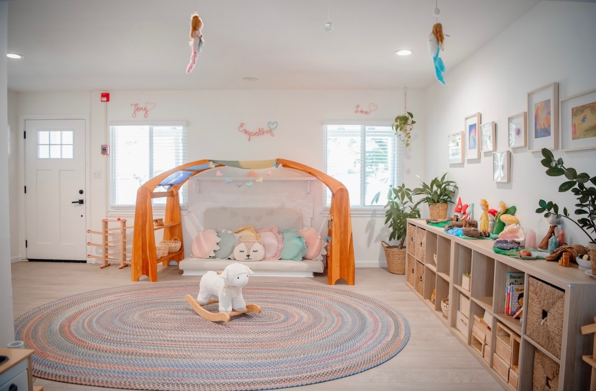
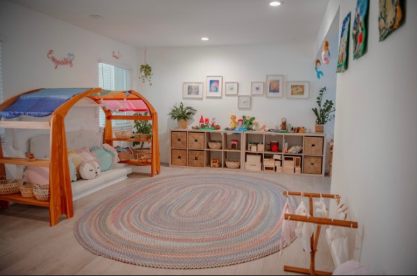
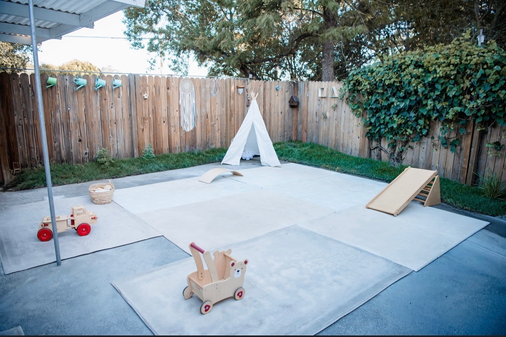
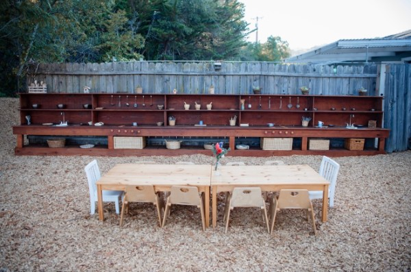

Gentle, Respectful Care
Each child is known and cared for with warmth, consistency, and respect, guided by Waldorf and RIE® principles.
A warm, home-based nursery school in Tiburon, welcoming children from 3 months through kindergarten age.




Care That Feels Like Home
Each child is known and cared for with warmth, consistency, and respect, guided by Waldorf and RIE® principles.
Unhurried days leave room for imagination, movement, creativity, rest, and deep play.
Homemade meals, time outdoors, and familiar faces create a close-knit sense of home.